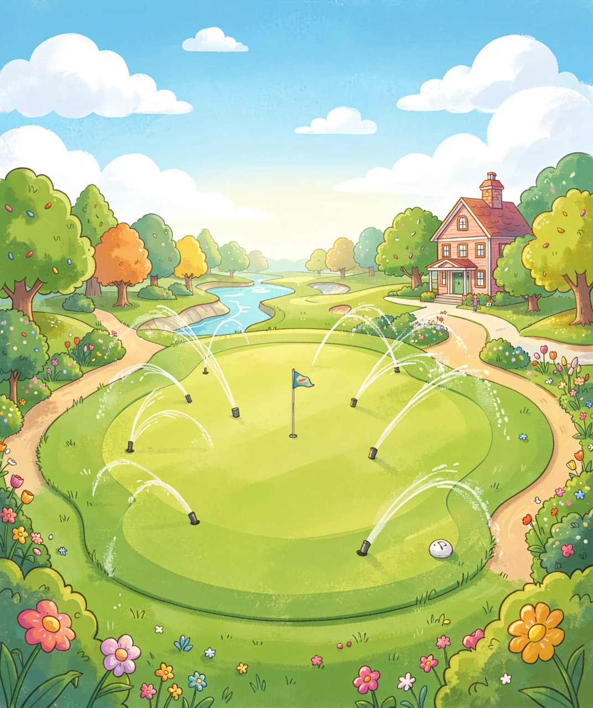
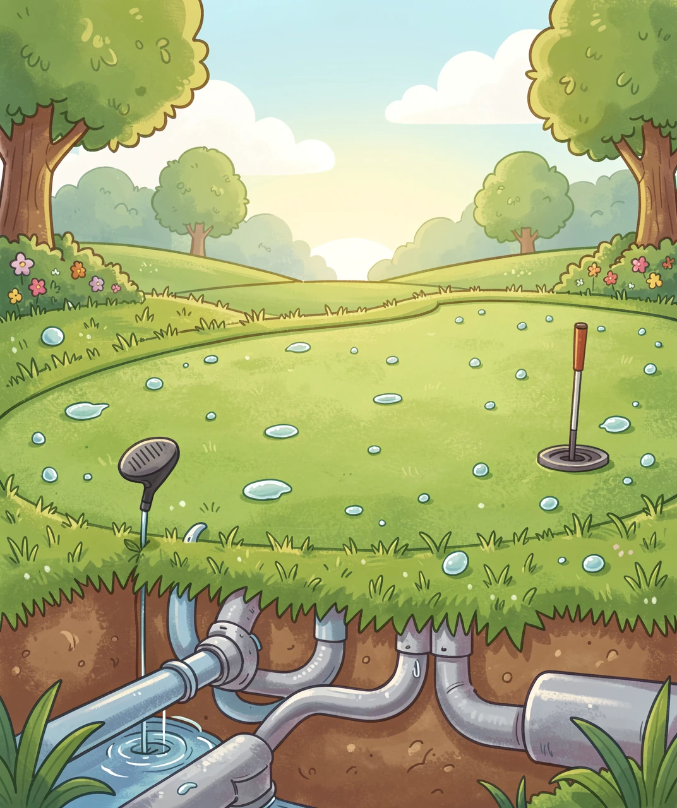
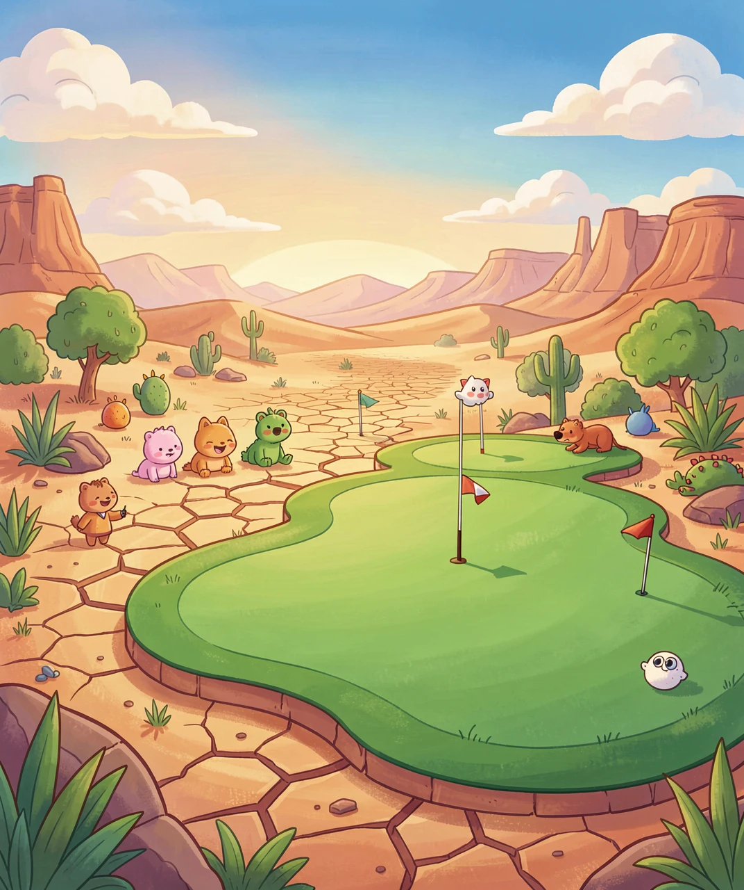
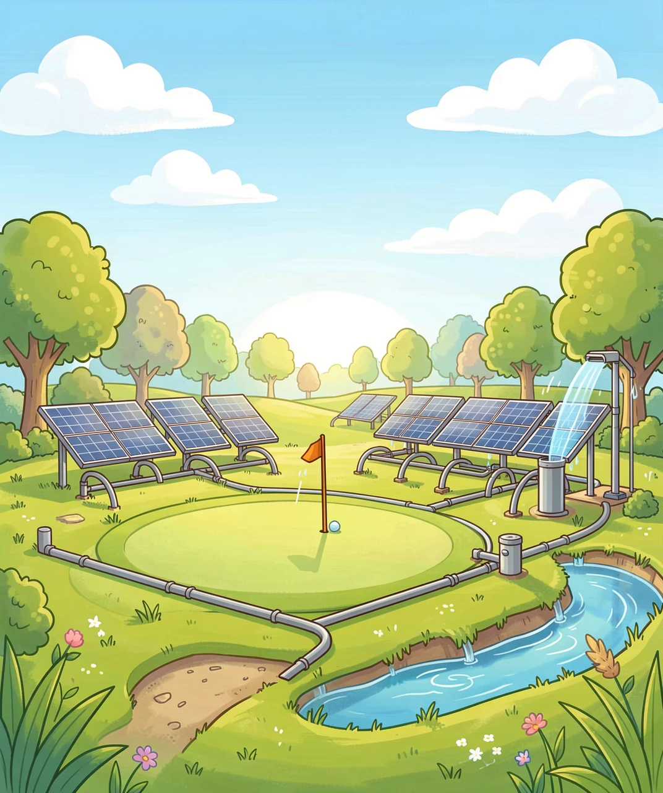
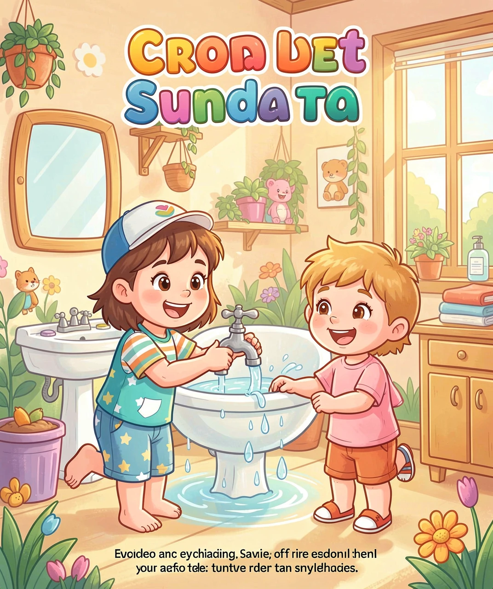

一场「绿色」的危机
小朋友们，你们有没有在电视上或图片里见过高尔夫球场？
那一片片绿油油的草地，像一块巨大的绿色地毯，铺在大地上。球道笔直宽阔，果岭平整得像镜子一样，还有漂亮的沙坑和小湖点缀其间。看起来是不是超级美？
很多大人都喜欢打高尔夫球，他们说这是"绅士的运动"，可以在草地上散步、呼吸新鲜空气，还能欣赏美丽的风景。
但是，你知道吗？维持这么漂亮的草地，需要消耗大量的水——比你想象的多得多！
一个标准的高尔夫球场，面积大约有60-80个足球场那么大！要让这么大的草地永远保持翠绿，需要不停地浇水。在炎热的夏天，一个高尔夫球场一天用的水，可能够一个普通家庭用上好几年！
这听起来是不是很惊人？接下来，让我们一起揭开高尔夫球场和水资源之间的秘密吧！
💧 你知道吗？一个18洞的高尔夫球场，一年用的水大约相当于2000个游泳池那么多！如果把这么多水装进矿泉水瓶，可以绕地球好几圈呢！
🌍 全世界大约有3万多个高尔夫球场，它们每年消耗的水加起来，是一个天文数字！

🏌️ 美丽的高尔夫球场，但维持它需要大量水资源
小朋友们都养过植物吧？植物需要水才能生长，这是我们都知道的。但是高尔夫球的草坪，可不是普通的草坪哦！
果岭是高尔夫球洞周围的那片草地，球要在这里被推进洞里。果岭的草非常短、非常密，而且必须非常平整。这种草叫"匍匐翦股颖"，听起来很复杂对吧？简单说，就是一种很娇气的草。
这种草很怕热、很怕干，夏天太阳一晒，如果不及时浇水，它就会变黄、枯死。所以果岭几乎每天都要浇水，有时候甚至一天要浇好几次！
球道是连接发球台和果岭的长长草地，球员要在这里把球打向果岭。球道的草比果岭长一些，但同样要保持绿色和柔软。如果草变黄了、变硬了，球就滚不动了，打球就不好玩了。
球场边缘的草地叫长草区，这里的草可以长得高一些。但即使是长草区，也不能完全枯死，否则球场就不好看了。
高尔夫球场浇水可不是用普通的水龙头哦！它们有复杂的灌溉系统——地下埋着很多水管和喷头，像一张巨大的蜘蛛网。电脑控制着这些喷头，定时定点地喷水。
在干旱的地区，有些球场甚至要用淡化海水或者处理过的废水来浇草。这要花很多钱，但为了维持球场的漂亮，不得不这样做。
🚿 一个高尔夫球场可能有1000多个自动喷头！这些喷头可以360度旋转，像小雨一样均匀地洒水。
🌙 很多球场选择在晚上浇水，因为白天太阳大，水很快就被蒸发掉了，晚上浇水可以省一些水。聪明的球场管理员还会看天气预报，如果明天要下雨，今天就不浇水了！

🌱 果岭的草非常娇气，需要精心呵护
小朋友们，地球看起来是不是有很多水？海洋、湖泊、河流……但其实，地球上能直接用的淡水非常少！
如果把地球上的所有水装进100个瓶子里：
• 97瓶是咸咸的海水，不能喝也不能浇地
• 2瓶是冰川和雪山上的冰，很难取用
• 只有1瓶是我们可以用的淡水！
而在这1瓶淡水中，还有很多被污染了，或者藏在地下很深的地方。真正容易取用的淡水，其实少得可怜。
现在问题来了：有些地方非常缺水，比如沙漠地区或者干旱的国家。那里的人们喝水都困难，庄稼也因为缺水长不好。
但是，你猜怎么着？有些地方竟然在沙漠里建高尔夫球场！
比如在中东的一些国家，那里到处是沙漠，一年下不了几场雨。但因为有石油，很有钱，就在沙漠里建起了豪华的高尔夫球场。为了让草地保持绿色，他们要从很远的地方运水，或者把海水淡化。这样做要花掉天文数字的钱，还要消耗大量的能源。
这公平吗？当当地的人们都在节约用水的时候，一片用来娱乐的草地却在大量消耗宝贵的水资源。
在一些地方，高尔夫球场和当地居民之间甚至发生了"水争夺战"。农场主需要水浇灌庄稼，居民需要水喝，但高尔夫球场也在抢水。在干旱季节，这个问题变得更加严重。
科学家们说，随着地球气候变暖，很多地方会变得更加干旱，水资源会越来越珍贵。到那时候，我们还能用这么多水来维持娱乐用的草地吗？
🏜️ 在迪拜（一个沙漠城市），有一个著名的高尔夫球场，它每年需要的水，如果给普通人用，可以供几千个家庭用一整年！
🌡️ 科学家预测，到2030年，全球可能有一半的人生活在缺水地区。那时候，每一滴水都会变得更加珍贵！

🏜️ 沙漠中的高尔夫球场——美丽的背后是巨大的水资源消耗
好消息是，越来越多的人意识到了这个问题，他们想出了很多聪明的办法来解决它！
现在的科技越来越发达，科学家们发明了很多节水的灌溉方法：
• 滴灌：像打点滴一样，直接把水送到草的根部，不让水白白蒸发掉
• 感应系统：在土里安装传感器，只有当草真的需要水的时候才浇水
• 智能天气预报：结合天气预报，如果明天要下雨，今天就不浇水
这些技术可以帮球场省下30%-50%的水！
科学家们还培育出了一些新的草种，它们：
• 更耐旱，不需要那么多水
• 更耐热，夏天也不容易枯死
• 生长更慢，不需要经常修剪
有些地方甚至开始使用人工草坪！人工草坪看起来和真草很像，但完全不需要浇水。虽然球员们说打球的"感觉"不太一样，但为了节约用水，这确实是个好办法。
聪明的球场开始收集雨水！他们在球场周围建蓄水池，下雨的时候把水存起来，干旱的时候再用。有些球场还收集和净化用过的水，循环使用来浇草。
一些新的高尔夫球场开始改变设计：
• 减少草坪面积，多留一些自然的沙漠或草原景观
• 使用当地本来就生长的植物，这些植物已经适应了当地的气候，不需要额外浇水
• 设计"旱生球场"，让沙坑和石头也成为美丽的景观
🌵 在澳大利亚，有一个高尔夫球场建在沙漠里，但它几乎不用浇水！因为它用的是当地的沙漠植物，这些植物超级耐旱，几个月不下雨也能活得好好的。球场看起来是金黄色的，别有一番风味！
🔬 科学家们正在研究一种"超级草"，它只需要现在草坪十分之一的水就能保持绿色。如果研究成功，未来的高尔夫球场可能就不再是"水老虎"了！

💡 现代节水技术让高尔夫球场变得更环保
读到这里，小朋友们可能会想："我只是个小朋友，能做什么呢？"
其实，你们能做的比想象中更多！真正的节水，不是让每个人少洗一次澡，而是让用水大户负起责任。
让我们算一笔账：
• 一个普通家庭一天用水：约200升（刷牙、洗澡、做饭）
• 一个高尔夫球场一天用水：约3,000,000升！
• 一个球场一天 = 15,000个家庭
这意味着：你省下一杯水，很好；但如果能让一个高尔夫球场改进灌溉系统，省下的水相当于几万个家庭的努力！
当你看到高尔夫球场、工厂或者大型建筑在浪费水时，可以：
• 拍照记录下来
• 告诉爸爸妈妈，让他们向相关部门反映
• 如果是学校或社区的水浪费，告诉老师或物业
记住：发现问题是解决问题的第一步！
把今天学到的知识讲给同学、家人听：
• 一个高尔夫球场一年用多少水？
• 为什么沙漠里建球场不公平？
• 有哪些节水技术可以帮球场减少浪费？
当更多人知道真相，改变就会发生。
很多国家和地区已经开始行动：
• 限制干旱地区新建高尔夫球场
• 要求球场使用再生水（处理过的废水）
• 强制安装节水灌溉系统
• 对超额用水征税
你可以支持这些政策，告诉身边的人："用娱乐来浪费水，不应该！"
不只是高尔夫球场，还有很多地方需要改进：
• 学校的喷泉是不是24小时开着？
• 公园的灌溉系统是不是在下雨天也喷水？
• 小区的绿化用水有没有计量？
发现问题，提出问题，推动改变。
虽然个人的力量有限，但好习惯仍然值得坚持：
• 刷牙时关掉水龙头（一次省6升水）
• 发现漏水及时告诉大人（滴水的水龙头一天浪费20升）
• 收集洗菜水浇花
这些不是"拯救地球"的全部，而是尊重水资源的态度。
💧 真正的节水 = 监督大户 + 支持政策 + 养成好习惯
每一滴水都很珍贵，但改变世界的力量，来自让更多人负起责任
🏭 你知道吗？工业用水如果循环利用，可以省下70%的水！这比几万个家庭"少洗澡"的效果还大。
🌾 农业滴灌技术比传统的"大水漫灌"省水50%以上。如果全世界的农田都用滴灌，省下的水可以填满一个中等大小的湖泊！
🏠 如果每个家庭每天节约10升水，全中国一年节约的水，可以填满几百个奥运会游泳池。但如果让全国的高尔夫球场都改用节水技术，省下的水是这个数字的几千倍！

🌱 未来的可持续球场——节水技术与自然和谐共存
题目一：一个标准高尔夫球场一年用的水，大约相当于多少个游泳池？
A. 20个 B. 200个 C. 2000个 D. 20000个
答案：C. 2000个
题目二：地球上的水，大约有多少是可以直接使用的淡水？
A. 50% B. 10% C. 3% D. 1%
答案：C. 3%（如果把地球水装100瓶，只有3瓶是淡水，其中还有很多是冰川，真正容易用的不到1%）
题目三：以下哪种方法可以帮助高尔夫球场节约用水？
A. 白天在太阳最大的时候浇水
B. 使用滴灌技术和智能感应系统
C. 把草种得更密一些
D. 每天都浇很多次水
答案：B. 使用滴灌技术和智能感应系统
题目四：以下哪种做法对节约水资源影响最大？
A. 一个人每天少喝一杯水
B. 让高尔夫球场改用节水灌溉系统
C. 刷牙时不用杯子
D. 每天少洗一次手
答案：B. 让高尔夫球场改用节水灌溉系统（一个球场改进系统省下的水，相当于几万个家庭的努力）
题目五：小朋友可以为节水做什么最有价值的事？
A. 每天只喝半杯水
B. 做"小小监督员"，发现浪费并向大人反映
C. 不洗澡
D. 不让爸爸妈妈喝水
答案：B. 做"小小监督员"，发现浪费并向大人反映（推动大户节水比个人省水影响大得多）
🏆 测试评分
答对5题：🌟🌟🌟🌟🌟 你是超级节水小达人！
答对4题：🌟🌟🌟🌟 很棒，继续加油！
答对3题：🌟🌟🌟 还不错，再读一遍文章吧！
答对2题及以下：🌟🌟 没关系，再学习一次，你一定能成为节水专家！